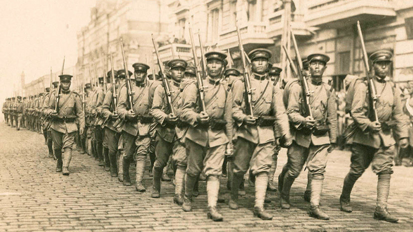
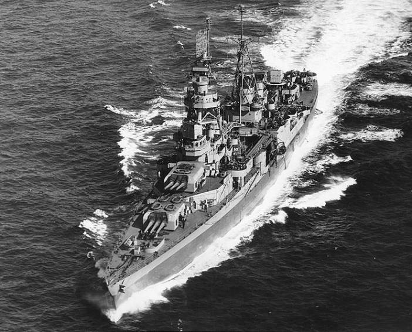
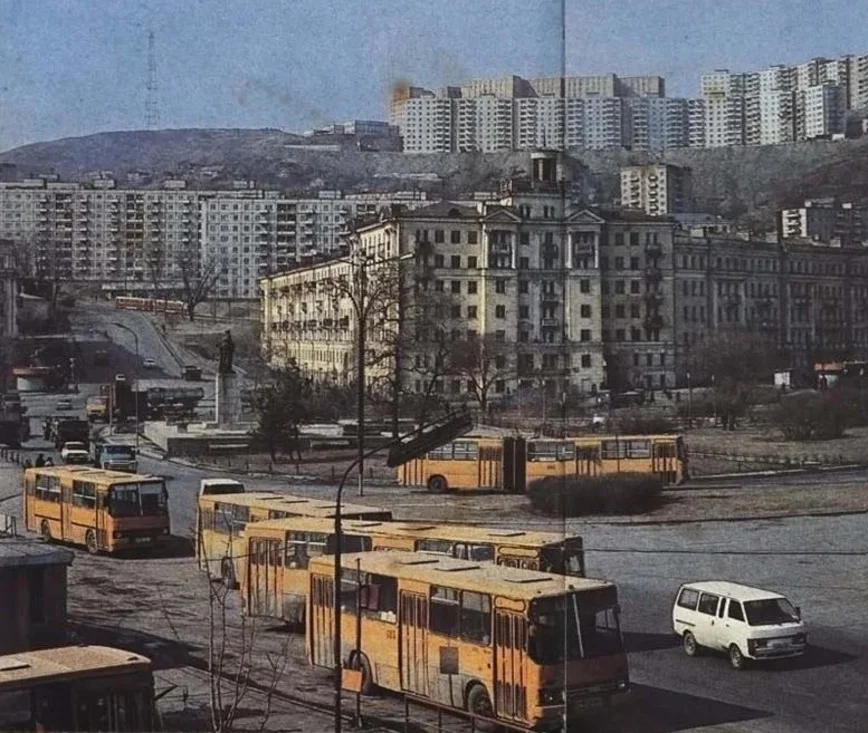

Значимые события
29 июня 1918 г. чехословацкие войска свергли советскую власть в городе, позже в город вошли войска США, Японии, Италии и Канады. В 1919 году край был охвачен партизанской войной.
Большинство иностранных войск покинуло Владивосток в 1920 году, кроме сил японского правительства, отличавшихся наибольшим числом.
В 1921 году японцы поддержали Приамурский земский край, что позволило разгромленным белым войскам укрываться и перегруппировываться под прикрытием японских частей.
В октябре 1922 года - вывод японских войск. Войска народно-революционной армии Дальневосточной республики под командованием Иеронима Уборевича заняли Владивосток, вытеснив из него соединения Белой армии. В ноябре Дальневосточная республика была ликвидирована и край вошёл в состав РСФСР.
В 1923—1925 гг правительство принимает план «восстановительной трёхлетки», в ходе которой возобновляется деятельность торгового порта, который становится самым доходным в стране за 1924—25 гг.
В 1927 году был принят первый план пятилетки.
В конце июля 1937 года Владивосток стал первым городом, который за всю историю советско-американских отношений посетила с дружественным визитом эскадра ВМС США (крейсер «Аугуста» и 4 эсминца).
Постановлением Совета Министров СССР «Вопросы Пятого Военно-Морского флота» от 11 августа 1951 года, во Владивостоке был введён особый режим (начал действовать 1 января 1952 г.); город становится закрытым для посещения иностранцами.
Впервые Никита Сергеевич Хрущёв посещает город в 1954 году.
Широкомасштабное жилищное строительство началось только в 1957 году.
В 1958 году открывается пассажирское авиасообщение с Москвой.
В 1959 году Хрущёв повторно посещает город.
Было оформлено постановлением Совета Министров СССР от 18 января 1960 года «О развитии г. Владивостока».
В 1974 году Владивосток с официальным визитом посетил 38-й президент США Джеральд Форд, были подписаны протокол к Договору об ограничении систем ПРО и Договор об ограничении подземных ядерных испытаний, которые помогли сдержать гонку вооружений.
20 сентября 1991 года президентом РСФСР Борисом Ельциным был подписан указ № 123 «Об открытии г. Владивостока для посещения иностранными гражданами»
С 1 января 1992 года Владивосток перестал быть закрытым городом.